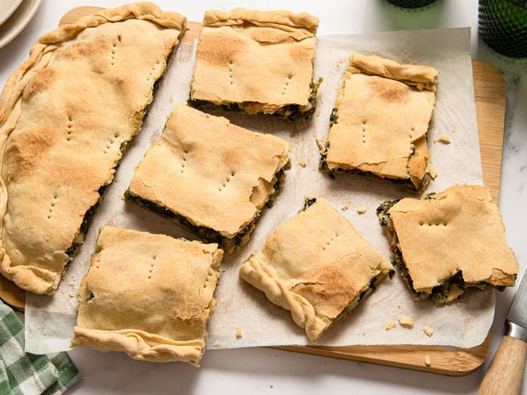

Home Page
Erbazzone

Description
Erbazzone, a traditional savory greens pie from Emilia Romagna, is a thin pastry crust filled with Swiss chard, onions, pancetta, and a generous amount of Parmigiano Reggiano. The result is a savory pie that’s portable, satisfying, and timeless.
Ingredients
Dough
- 3 1/2 cups all-purpose flour
- 1 teaspoon salt
- 1/4 cup olive oil (or use 1/4 cup lard for the traditional version)
- 1 cup water, plus up to 1/4 cup more if needed
Filling
- 2 tablespoons olive oil
- 3 ounces pancetta, diced, or more to taste
- 1 onion, finely chopped
- 1 pound Swiss chard - throughly washed, tough stems removed and both stems and leaves chopped
- salt and freshly ground black pepper to taste
- 1 cup grated Parmesan cheese
Steps
- For dough, combine flour and salt in a large mixing bowl. Pour in olive oil and slowly add in the water, mixing and kneading until you have a smooth, elastic dough that is not sticky. Adjust with a little extra flour or water as needed. Wrap dough in plastic wrap and let it rest in the refrigerator for about 1 hour.
- For filling, heat olive oil in a large skillet over medium heat. Add pancetta and cook until the fat renders. Stir in chopped onion and sauté until soft and translucent. Add greens, stir to combine, and cover. Let greens wilt, about 2 minutes. Remove lid, season with salt and pepper, and cook until all the liquid has evaporated. Set aside to cool completely.
- Preheat the oven to 400 degrees F (200 degrees C). Line a baking sheet with parchment paper. Divide the dough in half. Roll out 1 piece as thinly as possible, ideally to the size of your baking sheet. Transfer onto the sheet.
- Mix Parmesan cheese into cooled greens, then spread filling evenly over the dough. Roll out the second piece of dough and lay it over the filling. Fold the edges inward to seal. Prick the surface with a fork and brush lightly with olive oil.
- Bake in the preheated oven until golden and crisp, about 30 minutes. Serve warm or at room temperature.